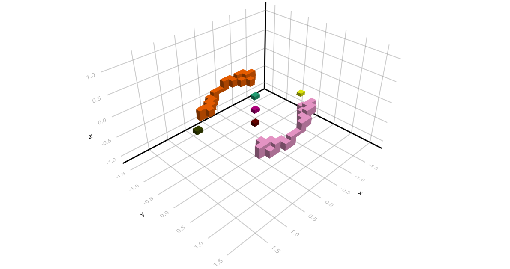

Conley Theory
Here we need a more detailed description of Conley theory, and in particular connection matrices. In particular, this should discuss the various field types that can be used, as well as all the entries in the ConleyMorseCM data structure.
[KMW16] [MW21] [DLMS24] [SW14b] [SW14a]
Morse Decomposition Intervals
We briefly return to one of the examples in the tutorial. More precisely, we consider the planar ordinary differential equation given by
\[ \begin{array}{rcl} \dot{x}_1 & = & x_1 \left( 1 - x_1^2 - 3 x_2^2 \right) \\[1ex] \dot{x}_2 & = & x_2 \left( 1 - 3 x_1^2 - x_2^2 \right) \end{array}\]
The dynamics of this system is characterized by the existence of a global attractor in the shape of a closed disk. Inside the attractor, there are nine different Morse sets:
- The origin is an equilibrium of index 2, i.e., it is an unstable stationary state with a two-dimensional unstable manifold.
- The four points $(\pm 1/2, \pm 1/2)$ are unstable equilibria of index 1, i.e., with a one-dimensional unstable manifold.
- Finally, the four points $(\pm 1, 0)$ and $(0, \pm 1)$ are asymptotically stable stationary states.
We saw in the tutorial that the Morse decomposition of this system can easily be found using ConleyDynamics.jl, as well as the associated connection matrix. Yet, in certain situations one might only be interested in part of the dynamics on the attractor. Moreover, while the Morse sets describe the recurrent part of the dynamics, they do not provide information on the geometry of the connecting sets between the Morse sets. In the following, we illustrate how this can be analyzed further.
The right-hand side of the above vector field can be implemented using the Julia function
function planarvf(x::Vector{Float64})
#
# Sample planar vector field with nontrivial Morse decomposition
#
x1, x2 = x
y1 = x1 * (1.0 - x1*x1 - 3.0*x2*x2)
y2 = x2 * (1.0 - 3.0*x1*x1 - x2*x2)
return [y1, y2]
endplanarvf (generic function with 1 method)To analyze the resulting global dynamical behavior, we first create a simplicial mesh covering the square $[-6/5, 6/5]^2$ using the commands
lc, coords = create_simplicial_delaunay(300, 300, 5, 50);
coordsN = convert_planar_coordinates(coords,[-1.2,-1.2], [1.2,1.2]);
lc.ncells14395The integer in the output gives the number of cells in the created Lefschetz complex $X$. Note that we are using a Delaunay triangulation over an initial box of size $300 \times 300$, where the target triangle size is about 5. This box is then rescaled to cover the above square. We can then create a multivector field on the simplicial complex lc and find its Morse decomposition using the commands
mvf = create_planar_mvf(lc, coordsN, planarvf);
morsedecomp = morse_sets(lc, mvf);
length(morsedecomp)9As expected, ConleyDynamics.jl finds exactly nine Morse sets. Their Conley indices can be computed and stored in a Vector{Vector{Int}} using the command
conleyindices = [conley_index(lc, mset) for mset in morsedecomp]9-element Vector{Vector{Int64}}:
[1, 0, 0]
[1, 0, 0]
[0, 1, 0]
[1, 0, 0]
[0, 1, 0]
[1, 0, 0]
[0, 1, 0]
[0, 1, 0]
[0, 0, 1]These Conley indices correspond to the dynamical behavior near the equilibrium solutions described above.
Suppose now that rather than finding the connection matrix for the complete Morse decomposition, we would only like to consider a part of it. This can be done as long as we restrict our attention to an interval in the Morse decomposition. Such an interval $\mathcal{I}$ can be created from a selection $\mathcal{S}$ of the Morse sets in the following way:
- In addition to the Morse sets in $\mathcal{S}$, the interval $\mathcal{I}$ contains all Morse sets that lie between two Morse sets in $\mathcal{S}$ with respect to the poset order underlying the Morse decomposition. Recall that this poset order can be computed via
morse_setsby activating the extra return objecthasse, which describes the Hasse diagram of the poset.
With every interval $\mathcal{I}$ of the Morse decomposition one can assign a smallest isolated invariant set $X_{\mathcal{I}} \subset X$ which describes the complete dynamics within and between the Morse sets in $\mathcal{I}$. In fact, in can be characterized as follows:
- The set $X_{\mathcal{I}}$ consists of all cells in the underlying Lefschetz complex $X$ through which one can find a solution which originates in one Morse set of $\mathcal{I}$ and ends in another Morse set of $\mathcal{I}$, where the two involved Morse sets can be the same. In other words, one needs to combine the interval Morse sets with all connecting orbits between them.
The two above steps can be performed in ConleyDynamics.jl using the function morse_interval.
In our example, we consider two intervals. The first interval consists of the five Morse sets corresponding to all unstable equilibrium solutions, while the second one considers the four index 1 and the four stable stationary states. The associated isolated invariant sets for these two intervals can be computed as follows:
subset1 = findall(x -> x[2]+x[3]>0, conleyindices);
subset2 = findall(x -> x[1]+x[2]>0, conleyindices);
lcsub1 = morse_interval(lc, mvf, morsedecomp[subset1]);
lcsub2 = morse_interval(lc, mvf, morsedecomp[subset2]);
[length(subset1), length(subset2), length(lcsub1), length(lcsub2)]4-element Vector{Int64}:
5
8
1201
2256The output shows that we have in fact extracted five and eight Morse sets, respectively. It also shows that the Lefschetz complexes corresponding to these two isolated invariant sets are much smaller than $X$.
So far, we have just determined the collections of cells that correspond to the two isolated invariant sets for these intervals. We can now restrict the combinatorial dynamics to these subsets. Note that since they are both isolated invariant sets, they are locally closed in $X$, and therefore the restrictions provide us with two new Lefschetz complexes lcr1 and lcr2, along with induced multivector fields mvfr1 and mvfr2, respectively. In ConleyDynamics.jl, this is achieved using the commands
lcr1, mvfr1 = restrict_dynamics(lc, mvf, lcsub1);
lcr2, mvfr2 = restrict_dynamics(lc, mvf, lcsub2);
[lcr1.ncells, lcr2.ncells]2-element Vector{Int64}:
1201
2256It is now easy to find the connection matrices for these two intervals. The first connection matrix is given by
cmr1 = connection_matrix(lcr1, mvfr1);
cmr1.conley5-element Vector{Vector{Int64}}:
[0, 1, 0]
[0, 1, 0]
[0, 1, 0]
[0, 1, 0]
[0, 0, 1]full_from_sparse(cmr1.matrix)5×5 Matrix{Int64}:
0 0 0 0 1
0 0 0 0 1
0 0 0 0 1
0 0 0 0 1
0 0 0 0 0It clearly shows that the unstable index 2 Morse set has connecting orbits to every one of the four index 1 equilibria. Similarly, the second connection matrix can be determined as
cmr2 = connection_matrix(lcr2, mvfr2);
cmr2.conley8-element Vector{Vector{Int64}}:
[1, 0, 0]
[1, 0, 0]
[1, 0, 0]
[1, 0, 0]
[0, 1, 0]
[0, 1, 0]
[0, 1, 0]
[0, 1, 0]full_from_sparse(cmr2.matrix)8×8 Matrix{Int64}:
0 0 0 0 0 1 1 0
0 0 0 0 0 0 1 1
0 0 0 0 1 1 0 0
0 0 0 0 1 0 0 1
0 0 0 0 0 0 0 0
0 0 0 0 0 0 0 0
0 0 0 0 0 0 0 0
0 0 0 0 0 0 0 0In this case, every index 1 equilibrium is connected two its two neighboring stable stationary states via heteroclinics that are detected by the connection matrix.
The Lefschetz complexes associated with the two Morse decomposition intervals can also be visualized in ConleyDynamics.jl. For this, recall that the function plot_planar_simplicial_morse can plot an underlying simplicial complex together with any collection of cell subsets. For our purposes, we use the following commands:
show1 = [[lcr1.labels]; cmr1.morse];
show2 = [[lcr2.labels]; cmr2.morse];
fname1 = "/Users/wanner/Desktop/invariantinterval2d1.png"
fname2 = "/Users/wanner/Desktop/invariantinterval2d2.png"
plot_planar_simplicial_morse(lc, coordsN, fname1, show1, vfac=1.1, hfac=2.0)
plot_planar_simplicial_morse(lc, coordsN, fname2, show2, vfac=1.1, hfac=2.0)The variable show1 collects not only the Morse sets that are part of the first connection matrix cmr1, but also the support of the Lefschetz complex lcr1. This support is accessed via [lcr1.labels], and we add it as a first vector of cells in show1. Similarly, we determine the support of the second isolated invariant set, together with the Morse sets of cmr2. The remaining four commands create two images.
The first image shows the five Morse sets surrounding the stationary states at the origin and at $(\pm 1/2, \pm 1/2)$. In addition, it highlights the support of the isolated invariant set associated with this Morse decomposition interval. One can clearly see rough outer approxomations for the four heteroclinics which start at the origin and end at the index 1 equilibria. These approximations are necessarily coarse, since we are not working with a very fine triangulation.

Finally, the second image depicts the eight Morse sets enclosing the index 1 and the stable stationary states. It also shows the support of the Lefschetz complex lcr2 which is associated with this Morse decomposition interval. In this case, it covers eight different heteroclinic orbits, which are in fact better approximated than the four in the previous image.
Cubical Analysis of a Planar System
Our next example illustrates how ConleyDynamics.jl can be used to analyze the global dynamics of a planar ordinary differential equations. For this, consider the planar system
\[ \begin{array}{rcl} \dot{x}_1 & = & x_2 - x_1 \left( x_1^2 + x_2^2 - 4 \right) \left( x_1^2 + x_2^2 - 1 \right) \\[1ex] \dot{x}_2 & = & -x_1 - x_2 \left( x_1^2 + x_2^2 - 4 \right) \left( x_1^2 + x_2^2 - 1 \right) \end{array}\]
This system has already been considered in [MSTW22]. The right-hand side of this vector field can be implemented using the Julia function
function circlevf(x::Vector{Float64})
#
# Sample vector field with nontrivial Morse decomposition
#
x1, x2 = x
c0 = x1*x1 + x2*x2
c1 = (c0 - 4.0) * (c0 - 1.0)
y1 = x2 - x1 * c1
y2 = -x1 - x2 * c1
return [y1, y2]
endcirclevf (generic function with 1 method)To analyze the global dynamics of this vector field, we first create a cubical complex covering the square $[-3, 3]^2$ using the commands
n = 51
lc, coords = create_cubical_rectangle(n,n,p=2);
coordsN = convert_planar_coordinates(coords,[-3.0,-3.0],[3.0,3.0]);
lc.ncells10609As the last result shows, this gives a Lefschetz complex with 10609 cells. The multivector field can be generated using
mvf = create_planar_mvf(lc, coordsN, circlevf);
length(mvf)2449This multivector field consists of 2437 multivectors. Finally, the connection matrix can be determined using the command
cm = connection_matrix(lc, mvf);
cm.conley3-element Vector{Vector{Int64}}:
[1, 1, 0]
[1, 0, 0]
[0, 1, 1]Therefore, the above planar system has three isolated invariant sets. One has the Conley index of a stable equilibrium, while the other two have that of a stable and an unstable periodic orbit. The columns of the connection matrix correspond to these invariant sets as follows
cm.poset5-element Vector{Int64}:
1
1
2
3
3The connection matrix itself is given by
full_from_sparse(cm.matrix)5×5 Matrix{Int64}:
0 0 0 1 0
0 0 0 0 1
0 0 0 1 0
0 0 0 0 0
0 0 0 0 0This implies that there are connecting orbits from the unstable periodic orbit to both the stable equilibrium, and the stable periodic orbit. To visualize these Morse sets, we employ the commands
fname = "cubicalcircles.pdf"
plot_planar_cubical_morse(lc, fname, cm.morse, pv=true)In the above example we used the original fixed cubical grid, which is just a scaled version of the grid on the integer lattice. It is also possible to work with a randomized grid, in which the coordinates of the vertices are randomly perturbed. This can be achieved with the following commands:
nR = 75
lcR, coordsR = create_cubical_rectangle(nR,nR,p=2,randomize=0.33);
coordsRN = convert_planar_coordinates(coordsR,[-3.0,-3.0],[3.0,3.0]);
mvfR = create_planar_mvf(lcR, coordsRN, circlevf);
cmR = connection_matrix(lcR, mvfR);
fnameR = "cubicalcirclesR.pdf"
plot_planar_cubical_morse(lcR, coordsRN, fnameR, cmR.morse, pv=true, vfac=1.1, hfac=2.0)To constrast the above example with the use of a Delaunay triangulation, we reanalyze the vector field in the following way:
lc2, coords2 = create_simplicial_delaunay(400, 400, 10, 30, p=2)
coords2N = convert_planar_coordinates(coords2,[-3.0,-3.0], [3.0,3.0])
mvf2 = create_planar_mvf(lc2, coords2N, circlevf)
cm2 = connection_matrix(lc2, mvf2)
fname2 = "cubicalcircles2.pdf"
plot_planar_simplicial_morse(lc2, coords2N, fname2, cm2.morse, pv=true)In this case, the Morse sets can be visualized as in the figure.

Notice that we can also show the individual multivectors in more detail. For the above example, we can plot all multivectors of the multivector field mvf2 which consist of at least 10 cells using the commands
mv_indices = findall(x -> (length(x)>9), mvf2)
large_mv = mvf2[mv_indices]
fname3 = "cubicalcircles3.pdf"
plot_planar_simplicial_morse(lc2, coords2N, fname3, large_mv, pv=true)
Note that in this example, there are only 20 large multivectors.
Cubical Analysis of a Spatial System
It is also possible to analyze certain three-dimensional ordinary differential equations in ConleyDynamics.jl. To provide one such example, consider the system
\[ \begin{array}{rcl} \dot{x}_1 & = & (\lambda-1) x_1 - \frac{3\lambda}{2\pi} \left( (x_1^3 - x_1^2 x_3 + x_2^2 x_3 + 2 x_1 \left( x_2^2 + x_3^2 \right) \right) \\[1ex] \dot{x}_2 & = & (\lambda-4) x_2 - \frac{3\lambda}{2\pi} \; x_2 \left( 2 x_1^2 + x_2^2 + 2 x_1 x_3 + 2 x_3^2 \right) \\[1ex] \dot{x}_3 & = & (\lambda-9) x_3 + \frac{\lambda}{2\pi} \left( x_1 \left( x_1^2 - 3 x_2^2 \right) - 3 x_3 \left( 2 x_1^2 + 2 x_2^2 + x_3^2 \right) \right) \end{array}\]
This system arises in the study of the so-called Allen-Cahn equation, which is the parabolic partial differential equation given by
\[ u_t = \Delta u + \lambda \left( u - u^3 \right) \;\;\;\text{ in }\;\;\; \Omega = (0,\pi) \quad\text{ with }\quad u = 0 \;\;\;\text{ on }\;\;\; \partial\Omega \; .\]
This partial differential equation can be interpreted as an infinite-dimensional system of ordinary differential equations, see for example [SW24, Section 6.1]. For this, one has to expand the unknown function $u(t,\cdot)$ as a generalized Fourier series with respect to the basis functions
\[ \varphi_k(x) = \sqrt{\frac{2}{\pi}} \, \sin(k \pi x) \quad\text{ for }\quad k \in \mathbb{N} \; .\]
If one truncates this series representation after three terms, and projects the right-hand side of the partial differential equation onto the linear space spanned by the first three basis functions, then the three coefficients of the approximating sum satisfy the above three-dimensional ordinary differential equation. Thus, this system provides a model for the dynamics of the partial differential equation, at least for sufficiently small values of the parameter $\lambda$. It can be implemented in Julia using the following commands:
function allencahn3d(x::Vector{Float64})
#
# Allen-Cahn projection
#
lambda = 3.0 * pi
c = lambda / pi
x1, x2, x3 = x
y1 = (lambda-1)*x1 - 1.5*c * (x1*x1*x1-x1*x1*x3+x2*x2*x3+2*x1*(x2*x2+x3*x3))
y2 = (lambda-4)*x2 - 1.5*c * x2 * (2*x1*x1+x2*x2+2*x1*x3+2*x3*x3)
y3 = (lambda-9)*x3 + 0.5*c * (x1*(x1*x1-3*x2*x2)-3*x3*(2*x1*x1+2*x2*x2+x3*x3))
return [y1, y2, y3]
endNotice that for our example we use the parameter value $\lambda = 3\pi$. In this particular case, one can show numerically that the system has seven equilibrium solutions. These are approximately given as follows:
- Two equilibria $\pm(1.45165, \; 0, \; 0.24396)$ of index 0.
- Two equilibria $\pm(0, \; 1.09796, \; 0)$ of index 1.
- Two equilibria $\pm(0, \; 0, \; 0.307238)$ of index 2.
- One equilibrium $(0, \; 0, \; 0)$ of index 3.
In order to find the associated Morse decomposition, one can use the commands
N = 25
bmax = [1.8, 1.5, 1.0]
lc, coordsI = create_cubical_box(N,N,N);
coordsN = convert_spatial_coordinates(coordsI, -bmax, bmax);
mvf = create_spatial_mvf(lc, coordsN, allencahn3d);These commands create a cubical box of size $25 \times 25 \times 25$ which covers the region $[-1.8,1.8] \times [-1.5,1.5] \times [-1.0,1.0]$. In addition, we construct a multivector field mvf which encapsulates the possible dynamics of the system. After these preparations, the Morse decomposition can be computed via
morsedecomp = morse_sets(lc, mvf);
morseinterval = morse_interval(lc, mvf, morsedecomp);
lci, mvfi = restrict_dynamics(lc, mvf, morseinterval);
cmi = connection_matrix(lci, mvfi);While the first command finds the actual Morse decomposition, the second one restricts the Lefschetz complex and the multivector field to the smallest isolated invariant set which contains all Morse sets and connecting orbits between them. The last command finds the connection matrix.
To see whether the above commands did indeed find the correct dynamical behavior, we first inspect the computed Conley indices of the Morse sets:
julia> cmi.conley
7-element Vector{Vector{Int64}}:
[1, 0, 0, 0]
[1, 0, 0, 0]
[0, 1, 0, 0]
[0, 1, 0, 0]
[0, 0, 1, 0]
[0, 0, 1, 0]
[0, 0, 0, 1]Clearly, these are the correct indices based on our numerical information concerning the stationary states of the system. The connection matrix is given by:
julia> full_from_sparse(cmi.matrix)
7×7 Matrix{Int64}:
0 0 1 1 0 0 0
0 0 1 1 0 0 0
0 0 0 0 1 1 0
0 0 0 0 1 1 0
0 0 0 0 0 0 1
0 0 0 0 0 0 1
0 0 0 0 0 0 0Thus, there are a total of ten connecting orbits that are induced through algebraic topology. The index 3 equilibrium at the origin has connections to each of the index 2 solutions, which lie above and below the origin in the direction of the $x_3$-axis. Each of the latter two stationary states has connections to both index 1 equilibria. Finally, each of these is connected to both stable states.

The location of the computed Morse sets is illustrated in the accompanying figure, which uses $x$, $y$, and $z$ instead of the variable names $x_1$, $x_2$, and $x_3$, respectively. Notice that while the stationary states of index 0, 2, and 3 are all well-localized, this cannot be said about the two equilibria of index 1. The computed enclosures for the latter two are elongated cubical sets which are shown along the upper left and lower right of the figure. This overestimation is a result of the use of a strict cubical grid, combined with the small discretization size N = 25. Nevertheless, the above simple code does reproduce the overall global dynamical behavior of the ordinary differential equation correctly.
One can also compute over Morse intervals, rather than the complete Morse decomposition. The final two images show two views of the Morse interval which corresponds to one of the index 1 equilibria, and the two stable stationary states. These computations were performed with the finer resolution N = 51.
References
See the full bibliography for a complete list of references cited throughout this documentation. This section cites the following references:
- [DLMS24]
- T. K. Dey, M. Lipiński, M. Mrozek and R. Slechta. Computing connection matrices via persistence-like reductions. SIAM Journal on Applied Dynamical Systems 23, 81–97 (2024).
- [KMW16]
- T. Kaczynski, M. Mrozek and T. Wanner. Towards a formal tie between combinatorial and classical vector field dynamics. Journal of Computational Dynamics 3, 17–50 (2016).
- [MSTW22]
- M. Mrozek, R. Srzednicki, J. Thorpe and T. Wanner. Combinatorial vs. classical dynamics: Recurrence. Communications in Nonlinear Science and Numerical Simulation 108, Paper No. 106226, 30 pages (2022).
- [MW21]
- M. Mrozek and T. Wanner. Creating semiflows on simplicial complexes from combinatorial vector fields. Journal of Differential Equations 304, 375–434 (2021).
- [SW24]
- E. Sander and T. Wanner. Theory and Numerics of Partial Differential Equations (SIAM, Philadelphia, 2024). In preparation, 1007 pages.
- [SW14a]
- T. Stephens and T. Wanner. Isolating block validation in Matlab, https://github.com/almost6heads/isoblockval (2014).
- [SW14b]
- T. Stephens and T. Wanner. Rigorous validation of isolating blocks for flows and their Conley indices. SIAM Journal on Applied Dynamical Systems 13, 1847–1878 (2014).